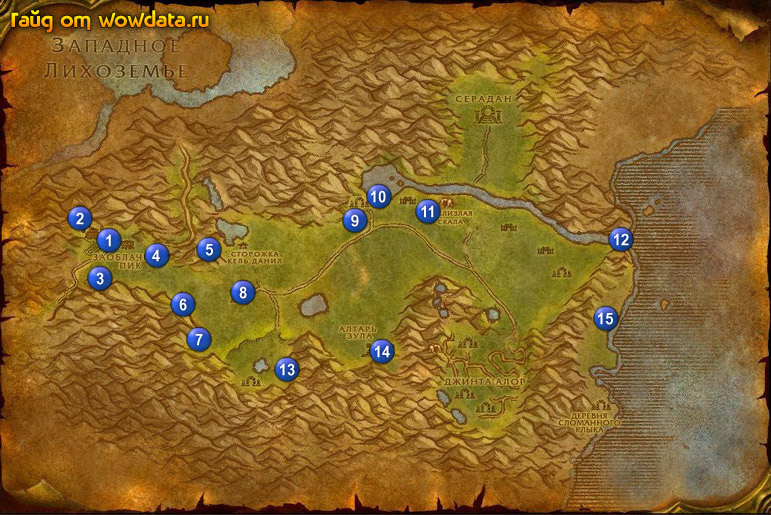

1) Идите наверх и закончите <Во Внутренние земли> 1 (12, 47), начните <Дрессировщик грифонов Разящий Коготь>.
2) Откройте пункт полета 1 (11, 46), затем идите закончите <Дрессировщик грифонов Разящий Коготь> 2 (10, 44) в здании наверху. Тут же начните <Рапсодия Землекоп> и <Тролльи клетки>.
3) Внизу стоит нпс дреней 1 (15, 47) Посол Руалет который начинает: <Встреча с Перобородом>, <Жест доброй воли> и <Охота на хищников>.
4) Внизу внутри здания (большого такого горожа) справа у Фраггар Громовая Мантия 1 (15, 45) начните <Зачистка Осклизлой скалы> и <Ожерелья троллей>.
5) Идите на 2ой этаж и сделайте это место вашим домом .
6) Идите в маленький домик 3 (13, 55) и найдите там Дневник Пероборода – используйте его и закончите <Встреча с Перобородом>, начните <В поисках Пероборода>.
7) Идите за перьями для <Любимцы Элуны?> 4 (20, 48) – разбросаны по всей локации, а так же бейте Облезлый среброгрив для <Охота на хищников>.
8) Идите закончите <Рапсодия Землекоп> 5 (27, 49), начните <Калимдорский коктейль>.
9) Идите назад в лагерь тролей там будет 2 клетки на квест <Тролльи клетки> 6 (23, 58).
10) Идите на юг в пещеру 7 (25, 66), бейте Знахарь Май'джин и его зверюшку Чаказ на квест <Жест доброй воли>.
11) А рядом c 8 (31, 57) бейте Среброгривый волк для <Охота на хищников>.
12) Идите на восток и откройте третью клетку для <Тролльи клетки> 8 (31, 57).
13) Теперь у вас должно быть 5 ожерелий для <Ожерелья троллей>, если нет побейте еще тролей.
14) Идите на северо-восток 9 (46,42) и бейте Зеленый слякоч для первой части <Зачистка Осклизлой скалы>.
15) Идите в точку 10 (49,38) – там вы найдете .
16) Идите в точку 11 (56,41) и бейте Нефритовый слизнюк для второй части квеста <Зачистка Осклизлой скалы>.
17) Идите к водопаду 12 (81, 46) для части квеста <Супер-хвататель ФХ> (там бродит куча черепах по пляжу, но вообще нужна элитная черепаха, убейте ее, а потом исплльзуйте [Супер-хвататель ФХ] на черепаший труп) и также собирайте по пляжу внизу водопада бутылки для <Потерянный грог Алкача Виски>.
18) Вернитесь в Заоблачный Пик.
19) Войдите внутрь и справа закончите <Зачистка Осклизлой скалы> и <Ожерелья троллей>.
20) Снаружи у Посол Руалет закончите <Жест доброй воли> и <Охота на хищников>.
21) Идите наверх и там внутри 2 (10, 45) закончите <Тролльи клетки>, начните <Алтарь Зула>.
22) Идите на юго-восток в 13 (37, 72), там вы увидите Останки Пероборода (труп дварфа на алтаре) на верху: закончите <В поисках Пероборода> и начните <Похищенные яйца>.
23) Теперь ищите Грифонье яйцо на верху одного из алтарей ( но и не только там). Также они спрятаны под развалинами… Также их можно найти на алтарях, вобщем: везде.
24) Пока делаете предыдущий начните <Джаммал'ан Пророк> 13 (34, 75). Заодно тут вы найдете несколько яиц.
25) Бегите наверх алтаря 14 (48, 68) для <Алтарь Зула>.
26) Теперь вы долждны быть очень близко к 47 лвл, было бы хорошо если б вы нашли , начали от него квест <Найти КПХ-9/HL!>, и закончили его в точке 10 (49, 37). А затем начали <Спасти КПХ-9/HL!> и довели бы до конца 15 (78, 61).
27) Вернитесь в Заоблачный Пик.
28) Внутри гаража закончите <Ожерелья троллей> (если есть).
29) Закончите <Похищенные яйца> на улице у Посол Руалет.
30) Внутри здания на самом верху (за площадкой пункт полета) закончите <Алтарь Зула> начните <Тадиус Мрачная Тень>.
31) Если есть закончите <Супер-хвататель ФХ> на острове у эльфов и начните <Возвращение к Троясу>. Тут же закончите <Любимцы Элуны?> на 1 этаже.
32) Теперь вы должны быть 47 лвл или вам до него совсем чуть чуть (примерно 8к).
33) Отправляйтесь на грифоне в Фералас.